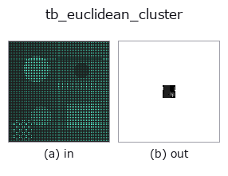

typed op• Data kinds: points → volume
• Call: fullseye.apply(img, "tb_euclidean_cluster", a=0.5, b=0.5) (the 2-D model is one image plus two scalar knobs a,b∈[0,1])

*The figure is the actual output on a synthetic 128×128 input. Left: input, right: output. Point clouds are drawn as a top-down scatter (brightness = z), 1-D series as a line plot, volumes as the maximum-intensity projection along z, videos as the middle frame, complex images as magnitude; return values that are not pictures are shown as the values themselves.*
*Knob a does not change the output (measured: identical at 0.1 / 0.5 / 0.9).*
*Knob b does not change the output (measured: identical at 0.1 / 0.5 / 0.9).*
Stages (the ops that come before → this op, left to right):
▸ tb_euclidean_cluster: stages (docs site)
On other images (synthetic scene / photo / coins. Top row: inputs, bottom row: their outputs. Knobs at default):
▸ tb_euclidean_cluster: other inputs (docs site)
Motion (GIF: frames / views / slices in turn. The still figure is the complete one; the GIF is supplementary):
Distance-based clustering via the connected components of a proximity graph with radius tol (-1 = noise).
> The detailed description below is the original text — the summary and the headings are translated.
互いに `tol` 以内の点を(推移的に)同一クラスタへ束ねる。空間的に離れた物体が
別クラスタになる(接地面除去後の「どの塊が掴める物か」の分離に使う)。連結成分のうち
`min_size` 未満のものはノイズとして -1。ラベルはクラスタサイズ降順で 0,1,2,...
(決定論)。
Args:
points: (N,3) 点群。
tol: 同一クラスタとみなす近接半径(距離、要 > 0)。
min_size: これ未満の連結成分はノイズ(-1)。
Returns:
labels: (N,) int。0..(n_clusters-1) がクラスタ、-1 がノイズ。空入力は shape (0,)。
2-D 進化レジストリへ橋渡しした 3d の op `euclidean_cluster。実装は同じで、呼び出し規約だけ op(v, a, b) に合わせてある。a が min_size(既定 10)を振る。b` は未使用。
• Sample-data catalog (download URLs / licences) — 2-D uses skimage.data (BSD/public domain) plus synthetic images; 3-D lists download URLs for real data sources (Stanford, PDS, …).
• Operator provenance and references — the sources of the research/methods this op family came from.
The program below has been verified to run (same input as the figure). In Studio's help this block becomes buttons that load and run it on the spot.
img_to_points 0.50 0.50 tb_euclidean_cluster 0.50 0.50
▸ Load this pipeline · Load & run
The examples below call the underlying ledger op euclidean_cluster. This bridge op is the same implementation adapted to the fn(v, a, b) convention, so the behaviour carries over unchanged (only the call form differs).
• object_segmentation — py -3.11 examples_3d/object_segmentation.py
volume as input)identity · vol_gaussian · vol_median · vol_erode · vol_dilate · vol_threshold · vol_reg_dilate · vol_reg_erode
typed)tb_points_to_voxel · tb_estimate_point_normals · tb_iss_keypoints · tb_project_points · tb_render_point_depth · tb_statistical_outlier_removal · tb_radius_outlier_removal · tb_voxel_grid_downsample
*Provenance: ops.py — 2D operator registry. This per-op note is generated by tools/opdocs.py md (do not hand-edit).*
© 2026 Kazufumi Furuse — Fullseye operator documentation. Licensed under Apache-2.0.
{kind=link}
{kind=link}